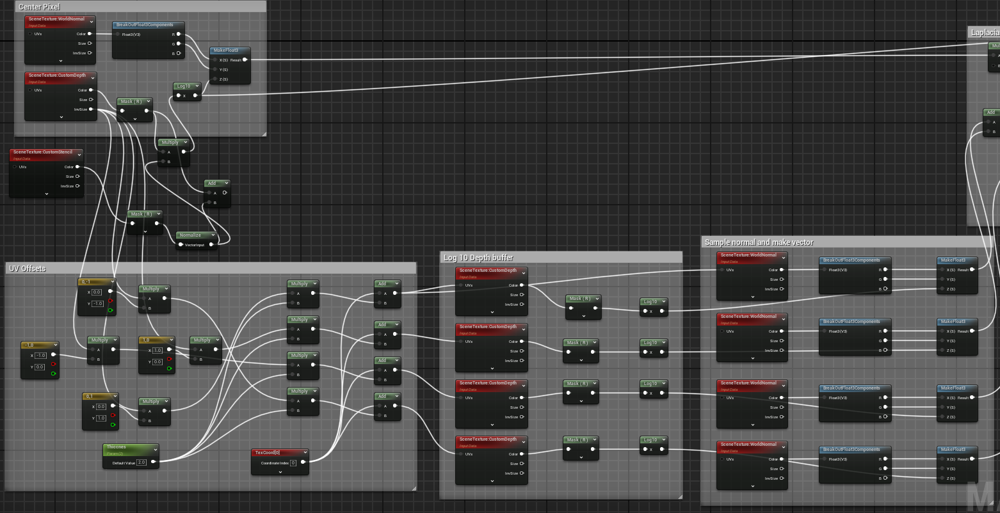
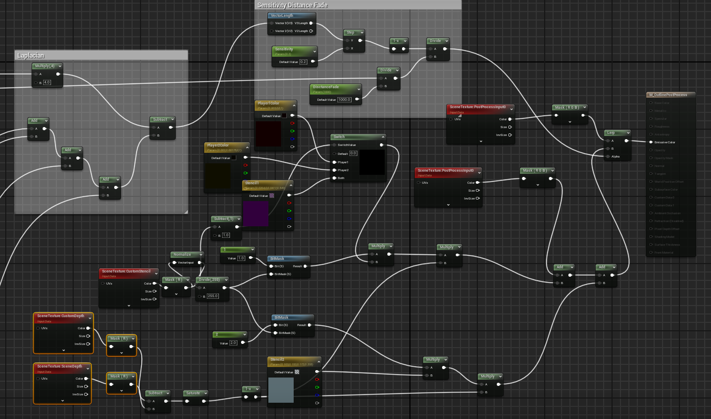
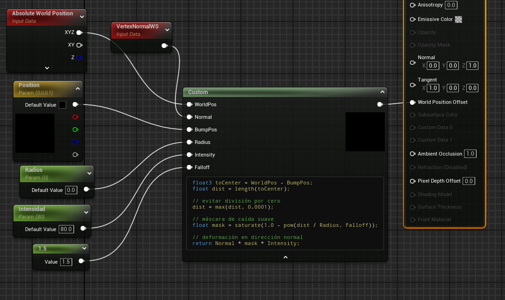

Underpacked!
Underpacked! is a third-person cooperative game developed by the Spanish studio Drunken Duck Co. With a vibrant cartoon aesthetic and satirical humor, it blends time management, chaotic action and intergalactic deliveries into a playful critique of modern work culture.
- Studio
- Drunken Duck Co.
- Genre
- Third-person co-op, time management
- Engine
- Unreal Engine (Blueprints), FMOD
- Platform
- PC (Steam)
- My role
- Gameplay, UI, Technical Art, VFX, Audio, QA
- Status
- In production, launching November 2026
Project Timeline
My Contribution
I work across gameplay, interface, technical art, audio and quality. Since the project moved into full production my responsibilities have expanded significantly.
Production phase
- Level production: 5 additional levels, from layout to final pass.
- Interface: on-screen mailbox indicator that shows which mailbox and color is requested and moves across the screen to guide the player.
- Level selector: a system to display 3D objects as UI images, used for the planets you travel to.
- Audio: expanded FMOD integration across new levels and systems.
- Post-processing: hit feedback effect when the player is struck.
- VFX & shaders: all effects and shaders added during production.
- Art pipeline: asset swaps and updates as the art direction matured.
- QA: continuous testing, bug reporting and playtesting.
Foundations (initial development)
- Gameplay: turret system, hull breaches, mailbox movement, respawn system.
- Animation: player and bot animation systems, contextual actions, emote wheel.
- Technical art: dynamic tube and cable generators, hologram notification, velocity-dependent background changes.
- VFX: explosions, fire, electricity, smoke, package and enemy effects.
- Post-processing & audio: outline effects, ship damage effect, FMOD integration.
- Optimization: profiling and performance testing.
Detailed Breakdown
Object Highlight
Interactable objects are highlighted with illuminated borders and guiding arrows.


Unreal Engine material graph behind the effect.Mailbox Indicator
A UI marker that tells players which mailbox needs a delivery and in which color. It travels across the screen to point toward the target, so players can keep their eyes on the action instead of hunting for the right mailbox.
Level Selector: 3D Planets as UI
The level selector shows each destination as a live 3D planet rather than a flat image. I built a reusable way to render 3D objects inside the interface, which lets the planets rotate, light up and react to selection like any other element of the menu.
Tube System
A dynamic tube system for transporting packages across the ship. Designers can create and modify tube layouts in real time, which makes level design faster and more flexible. The tubes use two custom materials, one for the tube and one to indicate direction, both with vertex animation.

Above: Blueprint logic for the tube system.Below: Vertex animation material.
VFX and SFX give feedback when a package enters or exits a tube.
Machine Animations
Animations for machines to give clear feedback on every interaction, plus VFX that communicate machine status. They are driven by tweens in code.
Mid: Furnace.
Below: Turret.
Hit Feedback Post-Process
A post-processing effect that triggers when the player is hit, so damage reads instantly even in the middle of the chaos.
VFX & Shaders
Visual effects and shaders created for Underpacked! to improve gameplay feedback and atmosphere: explosions, electricity, fire, smoke, package effects and more. Each one is built to be performant and readable in a chaotic co-op environment.
Level Production
I built 5 additional levels for the final game, covering layout, gameplay setup, lighting, VFX and audio, and then iterating on them after playtests.
Development Team
- Drunken Duck Co. on LinkedIn
- Worked with designers, programmers, artists and sound designers in a shared production pipeline, from prototype to release.